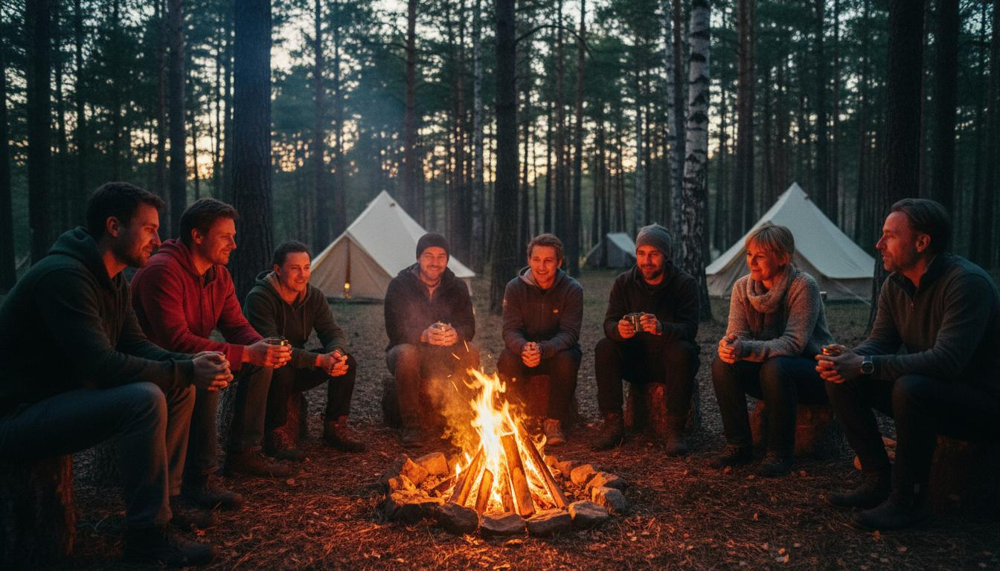
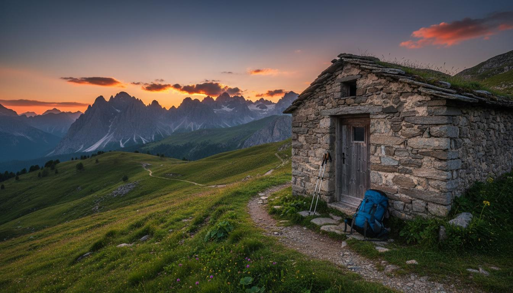
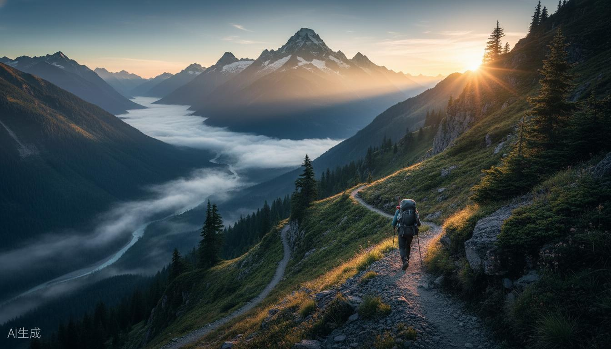
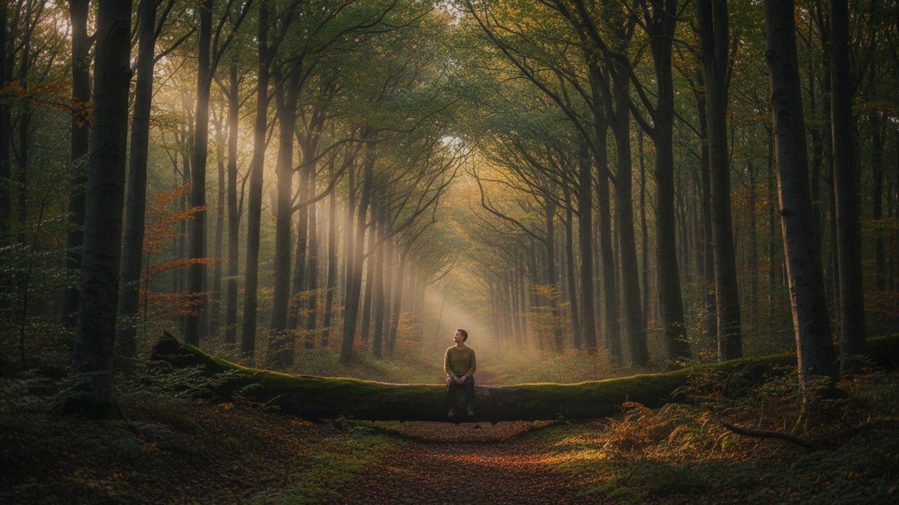
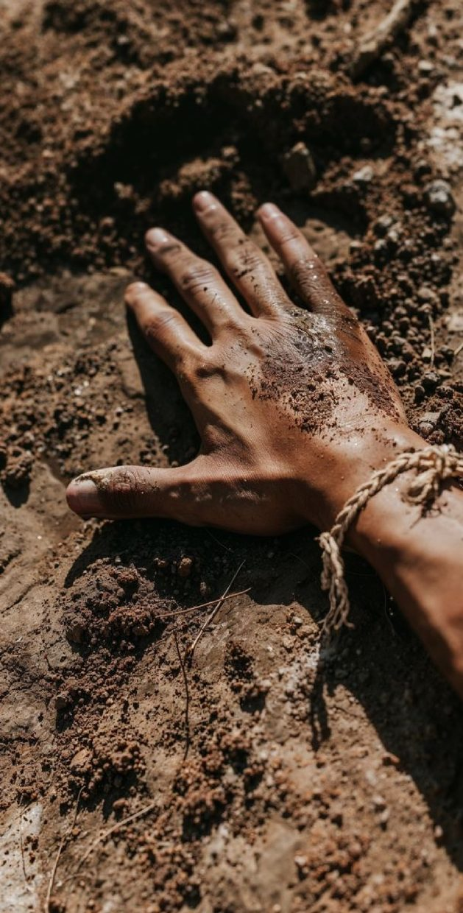

Giulia
Escape the City
“La prima notte nel bosco non la scordo. Ci torno con la mente ancora adesso.”
Impara tecniche, rallenta, torna ad abitare con ciò che ti circonda.
avventura · natura · consapevolezza





Tre modi di entrare nel selvatico, dalla durata più breve a quella più profonda.
Un primo assaggio: poche ore per provare un diverso modo di stare.
Scopri le soglie
Una giornata nel selvatico: orientarsi, fare gruppo, mettersi in gioco.
Scopri le avventureDormire nel bosco e vivere un ciclo completo. Qui c’è Escape the City.
Scopri le immersioniGiulia
Escape the City
“La prima notte nel bosco non la scordo. Ci torno con la mente ancora adesso.”
Davide
La Mappa del tuo Viaggio
“Ho iniziato a notare cose che di solito non vedo. È rimasto un modo diverso di guardare.”
Marta
Escape the City
“Sono arrivata da sola, senza conoscere nessuno. Sono tornata con un gruppo.”
Luca
Accendi il tuo Fuoco
“Il fuoco non prendeva. Poi ho capito che stavo forzando. Vale anche fuori dal bosco.”
Andrea
Escape the City
“Due giorni senza telefono e senza dover produrre niente. Non mi capitava da anni.”
Video segnaposto, da sostituire con le testimonianze reali. · Tutte le testimonianze →
Esci dal rumore: due giorni senza notifiche, orari e automatismi. Cammini, ti orienti, accendi un fuoco, cucini, dormi nel bosco.
Non devi essere un esperto né allenato: devi solo essere curioso. È l’esperienza da cui iniziare — la più completa, la più richiesta. Gruppi piccoli, posti che finiscono.
€115 early bird €135
NuovaOrientarsi coi sensi, non col GPS: leggere il territorio, le tracce, i suoni. Una giornata per imparare dove sei.
Scopri di piùL’archetto come specchio: guardi come reagisci quando qualcosa non viene subito. Torni con un’azione, non un’idea.
Scopri di più
Fuoco, acqua, terra, riparo, cibo, buio: sei elementi come porte per guardarti dentro. Dal venerdì alla domenica.
Scopri di più

Non ti portiamo nel bosco per spiegarti il bosco.
Ti portiamo nel bosco perché tu possa incontrarlo.
Imparare ad accendere un fuoco, costruire un riparo o orientarsi nel bosco sono abilità affascinanti, ma quante volte ti serviranno nella vita quotidiana?
Il vero valore di queste esperienze va oltre la tecnica.
Di cosa ha bisogno per nascere e mantenersi.
Riconoscere le risorse disponibili e costruire insieme.
Osservare l’ambiente e prendere decisioni.
Attraverso queste attività alleniamo capacità concrete come osservazione, problem solving, collaborazione e adattamento.
Porti a casa non solo nuove abilità, ma un modo diverso di guardare la natura, le risorse e le situazioni che affronti ogni giorno.
Esperienze su misura, nate da una richiesta: ognuna la costruiamo insieme sul tuo gruppo.

Il bosco come aula: bambini e ragazzi imparano con le mani, i piedi, il naso. Su richiesta, in Toscana ed Emilia.
Scopri di piùUna giornata nel bosco per ritrovare ascolto, coesione, orientamento, resilienza e nuove idee.
Scopri di piùSei capitoli per capire come sei finito a gestire la vita invece di viverla — e da dove si comincia a cambiare il modo in cui stai in un luogo.
Prossime uscite, storie dal bosco, pensieri attorno al fuoco. Gruppi piccoli, posti che finiscono.